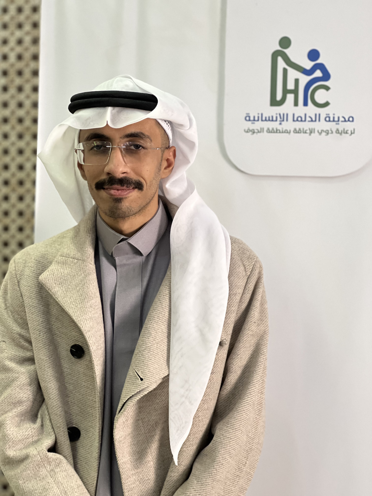

Samy Alshammari
Summary
I’m a network engineer currently learning web development. I enjoy solving technical problems and expanding my skills in networking and building websites.
Education
- Bachelor Degree in Computer and Network Engineering - Aljouf University (2019-2025)
Work Experience
- Network Engineer at Dalma Humanitarian City - (November 2025 - Present)
- Maintaining and troubleshooting network infrastructure
- Configuring and managing network devices
- Implementing security measures to protect the network
- Customer Service Representative at Interactive Smart Communications - (October 2025 - November 2025)
- Assisting customers with inquiries and technical issues
- Providing product information and support
- Resolving customer complaints and ensuring satisfaction
Skills
- Networking: CCNA, Network Troubleshooting, Network Security
- Web Development: HTML, CSS, JavaScript
- Problem Solving and Analytical Thinking
Others